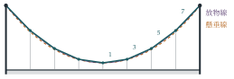

STEP I 1991、第10問
先に進む前に問題を読んでおこう。問題は STEP Support Programme の問題データベースにある： step.maths.org/questions/91-s1-q10
導入
鎖の両端を持って垂らすと、鎖は懸垂線（catenary、ラテン語の「鎖」に由来する）とよばれる曲線を描く。ガリレオ（Galileo）はこれを放物線（parabola）だと考えたが、そうではないことを1646年に十代のホイヘンス（Huygens）が示した。ところが、吊り橋（suspension bridge）のように、等間隔に並んだ支柱で重い路面を鎖から吊り下げると、鎖は本当に放物線をなす。違いは重さの分布の仕方にある。懸垂線では重さは曲がった鎖そのものに沿って分布し、橋では水平方向に均等に分布するのである。
この問題では、各節点で力を分解する（resolving forces）ことだけで、放物線になることを証明する。鍵となるのは、張力（tension）の水平成分（horizontal component）が鎖のどこでも同じであり、そのため各部分の傾きがその部分の支える重さに比例するという事実である。その結果、美しい規則性が現れる。隣り合う節点の間の落差は奇数 \(1, 3, 5, 7, \ldots\) の順に増え、その部分和（partial sum）は平方数になるのである。
取りかかる前に
各節点 \(A_i\) には三つの力がはたらく。隣り合う二つの部分の張力と、支柱から吊り下がる重さ \(w\) である。重さが影響を与えられないのは、張力のどの成分か。
重さは鉛直方向にはたらくので、各節点で二つの張力の水平成分はつり合わなければならない。したがって、張力の水平成分（これを \(H\) とおく）は鎖のどの部分でも同じである。
順を追って解く
段階 1 各節点での方程式
部分 \(A_{i-1}A_i\) が水平より下向きに角 \(\phi_i\) をなす（\(A_{i-1}\) から中央に向かう向きで測る）とする。すると、その張力 \(T_i\) の水平成分は \(T_i\cos\phi_i\)、鉛直成分は \(T_i\sin\phi_i\) である。\(1 \leq i \leq n\) について \(A_i\) で力を分解すると、 \[T_i\cos\phi_i = T_{i+1}\cos\phi_{i+1} = H, \qquad T_i\sin\phi_i - T_{i+1}\sin\phi_{i+1} = w.\] （外側の部分は上向きかつ外向きに、より大きな鉛直成分で引き、内側の部分は内向きかつわずかに下向きに引く。その差が支柱を支えている。）
中央の節点 \(A_{n+1}\) では何が起こるか。橋の対称性を用いよ。
対称性により、\(A_{n+1}\) で出会う二つの部分は互いに鏡像であるから、それぞれが支柱の重さの半分を支える。すなわち \(T_{n+1}\sin\phi_{n+1} = \frac12w\) である。
段階 2 重さから傾きへ
中央から外側へ順にたどると、鉛直成分は \[T_{n+1}\sin\phi_{n+1} = \tfrac12w, \quad T_n\sin\phi_n = \tfrac32w, \quad\ldots,\quad T_1\sin\phi_1 = \tfrac{2n+1}{2}w.\] となる。それぞれを \(H\) で割ると、傾きは \(\tan\phi_i = \frac{(2(n + 1 - i) + 1)w}{2H}\) である。部分 \(A_{i-1}A_i\) の傾きは \(\frac{y_{i-1} - y_i}{h}\) とも表せるので、 \[\frac{y_n - y_{n+1}}{h} = \frac{w}{2H}, \qquad \frac{y_{n-1} - y_n}{h} = \frac{3w}{2H}, \qquad\ldots,\qquad \frac{y_0 - y_1}{h} = \frac{(2n + 1)w}{2H}.\] 逆数をとって奇数を掛けると、\(\frac{h}{y_n - y_{n+1}}\)、\(\frac{3h}{y_{n-1} - y_n}\)、…、\(\frac{(2n + 1)h}{y_0 - y_1}\) はいずれも \(\frac{2H}{w}\) に等しい。■
段階 3 放物線
\(j\) で中央から外側へ数えた節点の番号を表し、\(A_{n+1-j}\) が \(A_{n+1}\) から水平距離 \(jh\) にあるようにする。それは \(A_{n+1}\) よりどれだけ高い位置にあるか。
\(c = \frac{wh}{2H}\) として落差を足し合わせると、 \[y_{n+1-j} - y_{n+1} = c\bigl(1 + 3 + 5 + \cdots + (2j - 1)\bigr) = cj^2.\] \(x\) を中央から測ると \(x = jh\) であるから、最も低い節点からの高さは \(\frac{c}{h^2}x^2 = \frac{w}{2Hh}x^2\) である。対称性により反対側でも同じことが成り立ち、両端の支点（\(j = n + 1\)）も同じ式を満たす。したがって、すべての点は放物線 \[y = y_{n+1} + \frac{w}{2Hh}(x - x_{n+1})^2. \qed\] 上にある。

振り返り
一定であるものを見つける。荷重が鉛直方向だけなら、水平方向の張力はどこでも同じである。
中央から積み上げる。各部分はそこから中央までの重さをすべて支えるので、鉛直成分は \(w\) ずつ増える。
奇数の和は平方数になる。\(1 + 3 + \cdots + (2j - 1) = j^2\) によって、傾きの列が放物線に変わった。
背後にある数学
放物線か懸垂線か
この議論を連続的にしたものは、両方の曲線を説明してくれる。一定の水平張力 \(H\) のもとにある鎖 \(y(x)\) について、張力の鉛直成分は \(Hy'\) であり、短い区間ではそこで担う荷重の分だけ変化する。すなわち \(H\,\mathrm{d}y' = \mathrm{d}W\) である。
荷重が水平方向に均等に分布している場合（重い路面で、道路の単位長さあたりの重さが \(\rho\)）、\(Hy'' = \rho\) となるので、\(y\) は二次式、つまり放物線である。
荷重が鎖の自重で、鎖に沿って均等に分布している場合（鎖の単位長さあたり \(\rho\)）、\(Hy'' = \rho\sqrt{1 + y'^2}\) となり、その解は懸垂線 \(y = c\cosh\frac xc\)（ただし \(c = H/\rho\)）である。
鎖がほぼ水平な底の付近では、二つの曲線はほとんど同じである。違いが出るのは支点の近くで、そこでは鎖が急になり、同じ水平距離により多くの鎖が含まれる。実際の吊り橋では路面がケーブルよりはるかに重いので、ケーブルの形は放物線にきわめて近い。
逆さにした鎖とアーチ
鎖には純粋な引張りだけがはたらいている。その形を上下逆さにすると、純粋な圧縮だけがはたらき、曲がろうとする傾向のないアーチが得られる。ロバート・フック（Robert Hooke）は1675年にこれをアナグラムの形で発表した。解読すると「しなやかな線が垂れ下がるように、ただし上下を逆にすれば、剛なアーチが立つ。」となる。クリストファー・レン（Christopher Wren）とフックはこの考えをセント・ポール大聖堂のドームに用いた。また、アントニ・ガウディ（Antoni Gaudí）は、重りを付けた紐を天井から吊るし、それを上下逆さに撮影することで、バルセロナのサグラダ・ファミリア（Sagrada Família）を設計した。セントルイスのゲートウェイ・アーチは（重み付きの）逆さ懸垂線である。
1690年、ヤコブ・ベルヌーイ（Jakob Bernoulli）は数学者たちに、垂れ下がる鎖の形を求めよという挑戦状を出した。一年のうちに、弟のヨハン・ベルヌーイ（Johann Bernoulli）、ライプニッツ（Leibniz）、そしてホイヘンスが解を発表した。ヨハン・ベルヌーイは後に、問題を出した兄自身は解けなかったと、得意げに回想している。懸垂線は新しい微積分学の最初の勝利の一つであり、双曲線関数（hyperbolic functions）\(\cosh\) と \(\sinh\) へとつながった。これらは18世紀に Vincenzo Riccati とランベルト（Johann Heinrich Lambert）によって体系的に研究された。
思考のスキル
節点とまっすぐな部材からなる構造では、各節点で力のつり合いを考えよ。一定に保たれる成分と積み上がる荷重が、しばしば形を明らかにする。
大学では、これは工学におけるトラス（truss）や骨組構造の解析となり、連続極限ではケーブル、梁、膜の微分方程式（differential equation）となる。離散的な鎖から連続的な鎖への移行は、第 10.3 節 で見た和から積分への移行と同じ手法である。
次の一歩
支柱の数が偶数の場合。支柱を \(2n\) 本にして問題を解き直せ。このとき鎖の最下点は中央の水平な部分になる。節点はやはり放物線上にあるか。
張力。鎖の張力の最大値を \(H\)、\(w\)、\(n\) を用いて求めよ。それはどこで生じるか。
懸垂線。\(y = c\cosh\frac xc\) が \(y'' = \frac1c\sqrt{1 + y'^2}\) を満たすことを確かめよ。また、\(x = 0\) から \(x = X\) までの懸垂線の長さが \(c\sinh\frac Xc\) であることを示せ。
ガリレオの誤り。長さ \(2L\) の鎖が、距離 \(2d\) だけ離れた二つの支点の間に垂れ下がっている。\(L\) が \(d\) よりわずかに大きいだけのとき、懸垂線のたるみは放物線のたるみとほぼ同じであることを示せ。ガリレオの実験で違いが明らかにならなかったのはなぜか。
さらに学ぶために
E. H. Lockwood, A Book of Curves（Cambridge University Press）。懸垂線、放物線とその仲間の曲線。
Jacques Heyman, The Stone Skeleton（Cambridge University Press）。石造のアーチやドームがなぜ立っていられるのかを、フックの鎖から説き起こす。
David Billington, The Tower and the Bridge（Princeton University Press）。橋の芸術と工学。